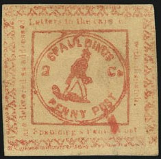
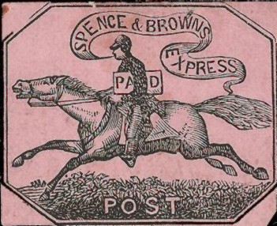
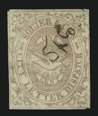
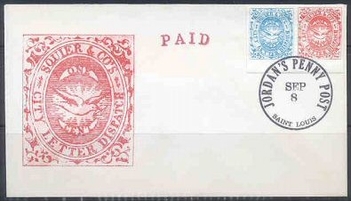
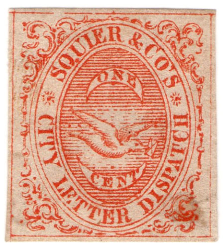
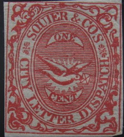

Type 2: Reduced size, image obtained from a Siegel auction
Return To Catalogue - United States locals overview - Price's to Smith - Teese's to Zieber - United States
Note: on my website many of the
pictures can not be seen! They are of course present in the cd's;
contact me if you want to purchase the catalogue.

Type 2: Reduced size, image obtained from a Siegel auction
These stamps resemble very much the ones issued by Gordon's City Express. Of each of these stamps only 2 copies are known to exists! Handstamps in the same design also exist. More information can be found on: http://www.siegelauctions.com/enc/carriers/spaulding.html. I've also seen some letters cancelled with "SPAULDING'S PENNY POST" in a circular design, with either "ONE CENT" in the center or an empty center.
Modern forgeries exist of Type 2 in a variety of colours (mostly on colored paper), sorry no image available yet.
Two stamps were issued around 1848; one with inscription "PHILAD'A EXPRESS POST Spence & Brown." and one with a man on a horse with inscription "SPENCE & BROWN'S EXPRESS POST".
First design with inscription "PHILAD'A EXPRESS POST Spence & Brown."
(Genuine, image obtained from a Siegel auction)
Second design: man on a horse with inscription "SPENCE & BROWN'S EXPRESS POST".
(Genuine, image obtained from a Siegel auction)
At least four different kinds of forgeries exist (among them a 'reprint' made by Hussey).
(Forgery)

Another forgery; the tail of the horse is different; the letters
in the banner don't have serifs.
Forgeries with the "E" of "EXPRESS" not
horizontal, the "C" of "SPENCE" different and
the "A" and "I" of "PAID" mostly
missing.

A 1 c green imperforate stamp was issued in 1859. More rouletted stamps were issued in 1860 (1 c brown, 1 c lilac and 1 c green). I have also seen values in red and blue (all 1 cent), they are all forgeries. Note that the left lower corner ornament, which is different for most forgeries. The right wingtip of the bird should be higher than the H of dispatch in the genuine stamps.
Jordan took over Squire in 1860, here a Squier stamp with cancel
"JORDAN PENNY POST".
Reprints were made in 1956. They can be found with cancels "JORDAN'S PENNY POST SEP 6 SAINT LOUIS" or "JORDAN'S PENNY POST SEP 8 SAINT LOUIS". The reprints were originally made in the colors green and brown, but were later mostly destroyed and replaced with reprints in blue and red color. However, brown and green reprints can still be found. The two colors were printed side by side on a sheet.

Two modern forgeries on a letter adressed to "St.Louis,
Cairo & New Orleans Steamboat Line Foot of Market St. St.
Louis, Missourri"

The green forgery was pasted on a letter with cancel 'New York'.
This forgery has the "E" of "CENT" placed above the second "E" of the word "LETTER". Also the ornaments between "CITY" and "SQUIER" and between "CO'S" and "DISPATCH" look like stars. The genuine ornaments are a more elliptic pattern of lines. There is a lot of empty white space around the ornaments in this forgery. The label containing "ONE" is too curved. This forgery also exists in blue color.
I've also seen a Scott forgery in the bogus colors black and violet. Some modern forgeries inspired by this Scott forgery seem to exist (made by Benson? in many bogus colors: black on lilac, green, black on yellow, orange, black on blue, blue, brown on yellow, black, green on yellow, blue on yellow, etc.). The third forgery (Hussey) also resembles very much this forgery (did Hussey copy his design from Scott or the other way around?). If I'm well informed another forger (Sheridan) also made forgeries in a very similar design in the colors red and black.
The Hussey forgery very much resembles the above Scott forgery. In my opinion, the 'C' of 'CENT' is different in the Scott forgeries.
The ornaments (especially in the corners) are different from the genuine stamps.
(Corner ornaments different, no outline around "ONE"
and "CENT")
I've also seen this forgery in the colors green, black and red.
Sixth forgery
The ornaments are again different (especially the ornament in the lower left corner). There are no 'rays' around the dove in this forgery, which resembles the Hussey forgery a lot otherwise.
Seventh forgery, reduced sizes
This forgery has the corners cut off. I've seen it in the colors green and brown.

Eight forgery.
I've also seen this forgery in the colors green and brown. Note the different corner ornaments in the lower left corner and the different rays around the bird. The star-like ornaments in the ellipse are also slightly different from the genuine stamps.
Ninth forgery, note the corner ornament in the upper left corner,
reduced size
(Genuine, reduced size, image obtained from a Siegel auction:
http://www.siegelauctions.com/1999/817/yf817264.htm )
In 1849 a 3 c red and 6 c red were issued. These stamps are very rare (only 11 of the 3 c and 3 of the 6 c stamps are known to have survived according to the Siegel website).
The next stamps are probably reprints/forgeries (at least 8 different kinds of forgeries exist of the 3 c, among them forgeries made by Scott, Hussey and Taylor):
(Reduced size)
Forgery:
(Reduced size)
I believe this is a forgery made by Hussey
I've also seen forgeries in bogus colors: black on red, blue, red on blue etc.
Issued in 1883 (1 c red only). This stamp is not very rare (both used and unused).
Note the very strong resemblance in design with the following 'Cincinnati' stamp:
Images obtained from a Siegel auction
This stamp in gold on black was issued in 1850 and is very rare. It has an outer rectangle with rounded corners. The words "STRINGER & MORTON'S" are written in an arc with "City" in the center. Finally the word "DESPATCH" is written straight at the bottom. Some, if not all of the bogus issues can be attributed to the forger Taylor.
In the genuine stamp, there is a bar above the word 'STRINGER'. It starts above the 'I' and ends above the middle of 'GE'. In this forgery, this bar starts at 'T' and ends at the back of the 'E'. There is a similar bar above the word 'MORTON'. In the genuine stamps, this bar starts at the 'R' and ends above the second 'O'. In the forgery, it starts before the first 'O' and ends after the second 'O'. There is a horizontal line in front and behind the word 'City'. In the genuine stamps, it stays away quite far from the words 'STRINGER' and 'MORTON'. In the forgery, the left bar almost touches the 'R' of 'STRINGER' and the right bar almost touches the 'N' of 'MORTON'. Sorry, no image available yet.
This forgery exists in many colors and many paper colors.
(Stringer & Morton's City Despatch Paid)
The design is totally different from the genuine stamp. The words are written in an ellipse. Furthermore the word "PAID" is added to the description. It exists in black on green, black on grey and black on lilac.
The design of this bogus issue is also totally different. The words are written straight in a rectangle. Around it a second rectangle can be found, the space between the two rectangles is filled up with lines that are directed towards the center of the stamp. An additional word '2 cts.' is added that is not found on the genuine stamps. I've seen it in the color red. It also seems to exist in the colors red on blue, black on lilac, black on yellow and black on green.
Again, the design of this bogus issue is totally different. The words "STRINGER & MORTON'S", "CITY" and "DESPATCH." are written in three straight horizontal lines. Additionally the word "PAID." has been added at the bottom. The whole stamp is surrounded by a rectangle with some ornamentals in the inner side of it. It exists in black on yellow or black on lilac.
(Extremely rare green stamp, image obtained from a Siegel
auction)
These stamps were issued in 1853 in the colours black on green, black (only two known to exist) and green (also only 2 copies known)
{kind=link}
{kind=link}
{kind=link}
{kind=link}
{kind=link}